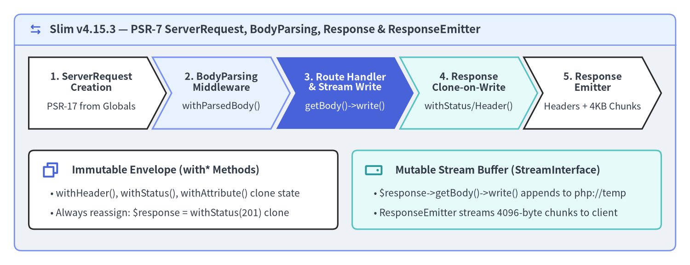
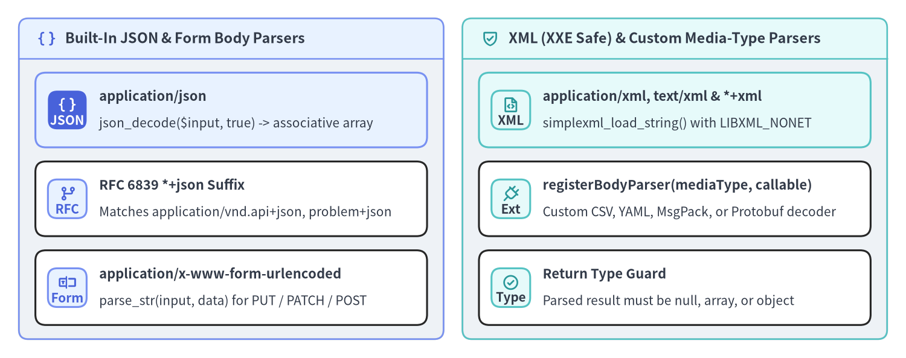

PSR-7 Requests, Responses & Streams
Slim v4.15.3 is built directly on the PSR-7 HTTP Message Interface (Psr\Http\Message\ServerRequestInterface, ResponseInterface, StreamInterface, UploadedFileInterface) and PSR-17 HTTP Factories (ResponseFactoryInterface, StreamFactoryInterface). Because Slim decouples HTTP message state from PHP superglobals ($_GET, $_POST, $_SERVER, header(), echo), every middleware and route handler operates on predictable, testable value objects—whether running under PHP-FPM, CLI PHPUnit tests, or long-lived worker runtimes.

Source Code
from drawlib.canvas import save, setup
from drawlib.icons import phosphor
from drawlib.shapes import rectangle
from drawlib.smartarts import ChevronProcess, Panel
from drawlib.styles import Styles
from drawlib.text import text
setup(width=192, height=74, dpi=150)
outer = Panel(
"Slim v4.15.3 — PSR-7 ServerRequest, BodyParsing, Response & ResponseEmitter",
style=Styles.Neutral.patch(shape_r=2.0),
header_style=Styles.PrimaryNeutral.patch(shape_line_width=1.2),
text_style=Styles.DarkBold.patch(text_size=11.5),
icon=phosphor.arrows_left_right,
icon_style=Styles.PrimaryBold,
header_variant="filled",
header_height=8.5,
)
outer.draw((4.0, 4.0), width=184.0, height=66.0)
proc = ChevronProcess(
style=Styles.White,
text_style=Styles.DarkBold.patch(text_size=10.3),
description_style=Styles.Dark.patch(text_size=9.8),
corner_angle=62.0,
spacing=1.5,
flat_left_end=True,
)
proc.add(
"1. ServerRequest\nCreation",
description="PSR-17 from Globals",
style=Styles.White,
)
proc.add(
"2. BodyParsing\nMiddleware",
description="withParsedBody()",
style=Styles.PrimaryNeutral,
)
proc.add(
"3. Route Handler\n& Stream Write",
description="getBody()->write()",
style=Styles.PrimaryFlat,
text_style=Styles.WhiteBold.patch(text_size=10.3),
description_style=Styles.White.patch(text_size=9.8),
)
proc.add(
"4. Response\nClone-on-Write",
description="withStatus/Header()",
style=Styles.SecondaryNeutral,
)
proc.add(
"5. Response\nEmitter",
description="Headers + 4KB Chunks",
style=Styles.White,
)
proc.draw(xy=(8.0, 38.0), width=176.0, height=20.0)
rectangle((51.0, 21.0), width=86.0, height=22.0, style=Styles.White.patch(shape_r=1.5))
phosphor.copy((14.0, 26.5), width=5.2, style=Styles.PrimaryBold)
text(
(20.0, 26.5),
"Immutable Envelope (with* Methods)",
style=Styles.DarkBold.patch(text_size=10.8, halign="left"),
)
text(
(14.0, 20.0),
"• withHeader(), withStatus(), withAttribute() clone state",
style=Styles.Dark.patch(text_size=10.0, halign="left"),
)
text(
(14.0, 14.5),
"• Always reassign: $response = withStatus(201) clone",
style=Styles.Dark.patch(text_size=10.0, halign="left"),
)
rectangle((141.0, 21.0), width=86.0, height=22.0, style=Styles.SecondaryNeutral.patch(shape_r=1.5))
phosphor.hard_drive((104.0, 26.5), width=5.2, style=Styles.SecondaryBold)
text(
(110.0, 26.5),
"Mutable Stream Buffer (StreamInterface)",
style=Styles.DarkBold.patch(text_size=10.8, halign="left"),
)
text(
(104.0, 20.0),
"• $response->getBody()->write() appends to php://temp",
style=Styles.Dark.patch(text_size=10.0, halign="left"),
)
text(
(104.0, 14.5),
"• ResponseEmitter streams 4096-byte chunks to client",
style=Styles.Dark.patch(text_size=10.0, halign="left"),
)
save()
PSR-7 Immutability & the Clone-on-Write Contract
Under PSR-7, both ServerRequestInterface and ResponseInterface are immutable value objects. Every with*() method—such as withHeader(), withAddedHeader(), withStatus(), withAttribute(), or withParsedBody()—clones the message internally and returns a new instance leaving the original reference untouched. By contrast, StreamInterface ($response->getBody()) wraps an underlying I/O resource (php://temp or a file handle) that mutates in-place when write() is called:
| PSR-7 Interface & Method | Mutability Model | Return Value & Usage Rule |
|---|---|---|
$request->withAttribute(string $name, $value) |
Immutable (Clone-on-Write) | Returns new ServerRequestInterface; must reassign $request = ... |
$request->withParsedBody($data) |
Immutable (Clone-on-Write) | Returns new ServerRequestInterface with decoded array/object |
$response->withStatus(int $code, string $reason = '') |
Immutable (Clone-on-Write) | Returns new ResponseInterface; must reassign or return directly |
$response->withHeader(string $name, $value) |
Immutable (Clone-on-Write) | Replaces existing header (case-insensitive) on returned clone |
$response->withAddedHeader(string $name, $value) |
Immutable (Clone-on-Write) | Appends additional header value (e.g., multiple Set-Cookie headers) |
$response->getBody()->write(string $string) |
In-Place Stream Resource | Returns int bytes written; mutates the shared StreamInterface resource |
[!CAUTION] The Classic Unassigned
withHeader()Bug: Calling$response->withHeader('Content-Type', 'application/json');as a standalone statement without capturing its return value silently discards the cloned object containing the new header! Always chainreturn $response->withStatus(201)->withHeader('Content-Type', 'application/json');or reassign$response = $response->withHeader(...).
<?php
declare(strict_types=1);
use Psr\Http\Message\ResponseInterface as Response;
use Psr\Http\Message\ServerRequestInterface as Request;
$app->post('/api/v1/items', function (Request $request, Response $response): Response {
$payload = json_encode(['created' => true], JSON_THROW_ON_ERROR);
// StreamInterface::write() mutates the underlying stream buffer in-place
$response->getBody()->write($payload);
// BUG (Discarded Clone):
// $response->withStatus(201);
// $response->withHeader('Content-Type', 'application/json');
// CORRECT: Capture or return the cloned ResponseInterface chain
return $response
->withStatus(201)
->withHeader('Content-Type', 'application/json')
->withAddedHeader('X-Cache-Tag', 'items')
->withAddedHeader('X-Cache-Tag', 'catalog');
});
Reading Query, Header, Cookie, Attribute & Upload Data
Never read $_GET, $_POST, $_COOKIE, $_FILES, or $_SERVER directly inside Slim controllers or middlewares; using ServerRequestInterface accessors ensures your code works identically in PHPUnit in-memory tests and worker runtimes:
<?php
declare(strict_types=1);
use Psr\Http\Message\ResponseInterface as Response;
use Psr\Http\Message\ServerRequestInterface as Request;
use Psr\Http\Message\UploadedFileInterface;
$app->post('/api/v1/documents', function (Request $request, Response $response): Response {
// 1. Query string parameters (?page=2&limit=20)
$queryParams = $request->getQueryParams();
$page = max(1, (int) ($queryParams['page'] ?? 1));
// 2. Case-insensitive HTTP headers
$requestId = $request->getHeaderLine('X-Request-Id') ?: bin2hex(random_bytes(8));
$clientIp = $request->getServerParams()['REMOTE_ADDR'] ?? '127.0.0.1';
// 3. Cookies & custom attributes injected by upstream auth middleware
$sessionCookie = $request->getCookieParams()['session_id'] ?? null;
$actorId = (int) $request->getAttribute('authenticated_user_id', 0);
// 4. PSR-7 UploadedFileInterface handling
$uploadedFiles = $request->getUploadedFiles();
/** @var UploadedFileInterface|null $attachment */
$attachment = $uploadedFiles['document'] ?? null;
$savedFilename = null;
if ($attachment !== null && $attachment->getError() === UPLOAD_ERR_OK) {
$extension = pathinfo((string) $attachment->getClientFilename(), PATHINFO_EXTENSION);
$savedFilename = sprintf('%s.%s', bin2hex(random_bytes(12)), $extension ?: 'bin');
$attachment->moveTo('/var/data/uploads/' . $savedFilename);
}
$payload = json_encode([
'page' => $page,
'request_id' => $requestId,
'client_ip' => $clientIp,
'has_session' => $sessionCookie !== null,
'actor_id' => $actorId,
'uploaded_file' => $savedFilename,
], JSON_THROW_ON_ERROR);
$response->getBody()->write($payload);
return $response->withHeader('Content-Type', 'application/json');
});
BodyParsingMiddleware & Custom Media-Type Parsers
By default, PSR-7 only populates $request->getParsedBody() for traditional POST form submissions created from $_POST. For application/json, PUT/PATCH form bodies, XML payloads, or vendor-specific media types, register $app->addBodyParsingMiddleware() (Slim\Middleware\BodyParsingMiddleware). It inspects the Content-Type header (getMediaType()), looks up an exact media-type parser, and if none matches, automatically falls back to RFC 6839 structured syntax suffixes (+json and +xml):

Source Code
from drawlib.canvas import save, setup
from drawlib.icons import phosphor
from drawlib.smartarts import CardList, Panel
from drawlib.styles import Styles
setup(width=192, height=76, dpi=150)
left_panel = Panel(
"Built-In JSON & Form Body Parsers",
style=Styles.Neutral.patch(shape_r=2.0),
header_style=Styles.PrimaryNeutral.patch(shape_line_width=1.2),
text_style=Styles.DarkBold.patch(text_size=11.2),
icon=phosphor.brackets_curly,
icon_style=Styles.PrimaryBold,
header_variant="filled",
header_height=8.5,
)
left_panel.draw((4.0, 4.0), width=90.0, height=68.0)
l_xy, l_w, l_h = left_panel.get_content_box((4.0, 4.0), width=90.0, height=68.0, padding=(3.5, 3.0))
cl_left = CardList(
style=Styles.White,
text_style=Styles.DarkBold.patch(text_size=10.5),
description_style=Styles.Dark.patch(text_size=10.0),
badge_shape="rounded_rect",
badge_style=Styles.PrimaryNeutral,
badge_text_style=Styles.PrimaryBold.patch(text_size=10.0),
icon_style=Styles.PrimaryBold,
direction="vertical",
spacing=3.0,
)
cl_left.add(
"application/json",
"json_decode($input, true) -> associative array",
badge_text="JSON",
icon=phosphor.brackets_curly,
style=Styles.PrimaryNeutral,
badge_style=Styles.PrimaryFlat,
badge_text_style=Styles.WhiteBold.patch(text_size=10.0),
icon_style=Styles.WhiteBold,
)
cl_left.add(
"RFC 6839 *+json Suffix",
"Matches application/vnd.api+json, problem+json",
badge_text="RFC",
icon=phosphor.git_branch,
style=Styles.White,
)
cl_left.add(
"application/x-www-form-urlencoded",
"parse_str(input, data) for PUT / PATCH / POST",
badge_text="Form",
icon=phosphor.textbox,
style=Styles.White,
)
cl_left.draw(xy=l_xy, width=l_w, height=l_h)
right_panel = Panel(
"XML (XXE Safe) & Custom Media-Type Parsers",
style=Styles.Neutral.patch(shape_r=2.0),
header_style=Styles.SecondaryNeutral.patch(shape_line_width=1.2),
text_style=Styles.DarkBold.patch(text_size=11.2),
icon=phosphor.shield_check,
icon_style=Styles.SecondaryBold,
header_variant="filled",
header_height=8.5,
)
right_panel.draw((98.0, 4.0), width=90.0, height=68.0)
r_xy, r_w, r_h = right_panel.get_content_box((98.0, 4.0), width=90.0, height=68.0, padding=(3.5, 3.0))
cl_right = CardList(
style=Styles.White,
text_style=Styles.DarkBold.patch(text_size=10.5),
description_style=Styles.Dark.patch(text_size=10.0),
badge_shape="rounded_rect",
badge_style=Styles.SecondaryNeutral,
badge_text_style=Styles.DarkBold.patch(text_size=10.0),
icon_style=Styles.SecondaryBold,
direction="vertical",
spacing=3.0,
)
cl_right.add(
"application/xml, text/xml & *+xml",
"simplexml_load_string() with LIBXML_NONET",
badge_text="XML",
icon=phosphor.file_code,
style=Styles.SecondaryNeutral,
)
cl_right.add(
"registerBodyParser(mediaType, callable)",
"Custom CSV, YAML, MsgPack, or Protobuf decoder",
badge_text="Ext",
icon=phosphor.plug,
style=Styles.White,
)
cl_right.add(
"Return Type Guard",
"Parsed result must be null, array, or object",
badge_text="Type",
icon=phosphor.check_circle,
style=Styles.White,
)
cl_right.draw(xy=r_xy, width=r_w, height=r_h)
save()
You can also register custom media-type parsers via $bodyParsingMiddleware->registerBodyParser(string $mediaType, callable $callable) for formats such as text/csv, application/msgpack, or application/x-yaml (any non-null return value must be an array or object, otherwise Slim throws a RuntimeException):
<?php
declare(strict_types=1);
use Psr\Http\Message\ResponseInterface as Response;
use Psr\Http\Message\ServerRequestInterface as Request;
use Slim\Factory\AppFactory;
$app = AppFactory::create();
// Register built-in JSON, Form, and XML parsers
$bodyParsingMiddleware = $app->addBodyParsingMiddleware();
// Register a custom CSV media-type parser returning a list of associative rows
$bodyParsingMiddleware->registerBodyParser('text/csv', static function (string $input): array {
$lines = array_values(array_filter( preg_split('/\r\n|\r|\n/', trim($input)) ?: [] ));
if ($lines === []) {
return [];
}
$headers = str_getcsv((string) array_shift($lines));
$rows = [];
foreach ($lines as $line) {
$values = str_getcsv($line);
if (count($values) === count($headers)) {
$rows[] = array_combine($headers, $values);
}
}
return $rows;
});
$app->post('/api/v1/import', function (Request $request, Response $response): Response {
$parsed = (array) ($request->getParsedBody() ?? []);
$payload = json_encode(['imported_count' => count($parsed)], JSON_THROW_ON_ERROR);
$response->getBody()->write($payload);
return $response->withHeader('Content-Type', 'application/json');
});
Building JSON Responses, Redirects, File Streams & ResponseEmitter
When returning responses from route handlers, keep memory usage bounded and leverage PSR-17 streams for large payloads:
- JSON Responses: Encode with
json_encode($data, JSON_THROW_ON_ERROR | JSON_UNESCAPED_SLASHES), write to$response->getBody()->write($json), and setContent-Type: application/json. - Streaming Large Files (
StreamFactoryInterface::createStreamFromFile()): Never load multi-megabyte exports into memory withfile_get_contents(). Instead, attach a file stream via$response->withBody($streamFactory->createStreamFromFile($path, 'rb')). - How
Slim\ResponseEmitterTransmits the Response: When$app->run()completes,ResponseEmitter::emit()checksheaders_sent(), emits all headers—explicitly preserving multipleSet-Cookieheaders without overwriting earlier cookies—sends theHTTP/1.1 200 OKstatus line last, and streams the body in $responseChunkSize = 4096 byte chunks viaconnection_status()checks so large file streams never exceed PHP'smemory_limit.
<?php
declare(strict_types=1);
use Psr\Http\Message\ResponseInterface as Response;
use Psr\Http\Message\ServerRequestInterface as Request;
use Psr\Http\Message\StreamFactoryInterface;
$app->get('/api/v1/exports/{filename:[a-z0-9_-]+\.csv}', function (
Request $request,
Response $response,
array $args
) use ($container): Response {
$filePath = '/var/data/exports/' . $args['filename'];
/** @var StreamFactoryInterface $streamFactory */
$streamFactory = $container->get(StreamFactoryInterface::class);
$fileStream = $streamFactory->createStreamFromFile($filePath, 'rb');
return $response
->withStatus(200)
->withHeader('Content-Type', 'text/csv; charset=utf-8')
->withHeader('Content-Disposition', sprintf('attachment; filename="%s"', $args['filename']))
->withBody($fileStream);
});
Now that you understand PSR-7 message immutability, BodyParsingMiddleware, and streamed emission, continue to PSR-15 Concentric LIFO Pipeline to see how Slim wraps middlewares across application, group, and route scopes, or inspect the full BodyParsingMiddleware and ResponseEmitter specifications in the Slim 4 API Reference and Slim 4 Internal Architecture portals.